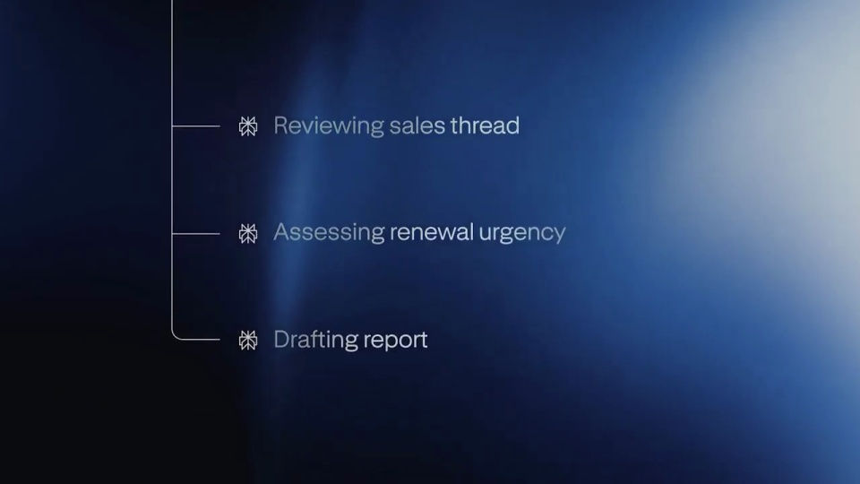
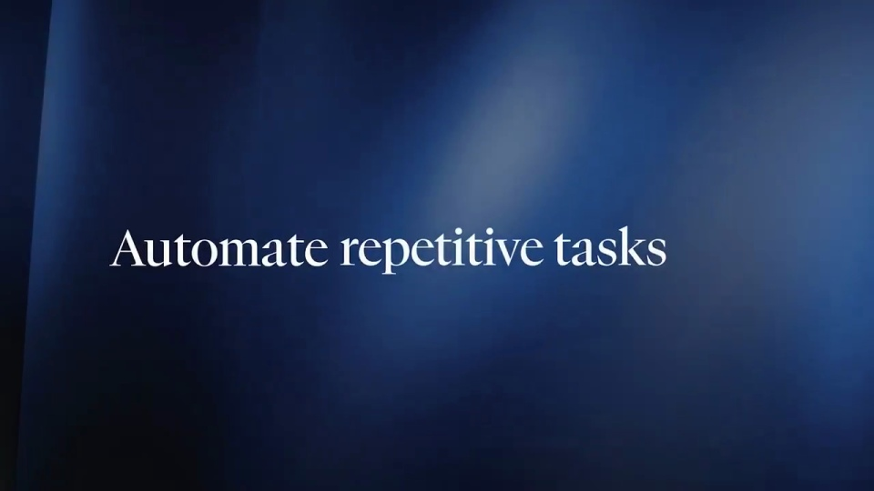

Perplexity / V079
Computer 上线 Automations
把自动化拆成两个看得懂的故事：外部事件触发一次，时间计划再触发一次；每个故事都交代条件、执行过程和结果。
构图与编排 可播放 · 可替换内容
整体编排规则示例
查看 HTML 源码
<!doctype html><html lang="zh-CN"><meta charset="utf-8"><meta name="viewport" content="width=device-width,initial-scale=1"><title>Computer 上线 Automations · sequence</title><style>html,body{margin:0;width:100%;height:100%;overflow:hidden;background:#071128}canvas{display:block;width:100%;height:100%;object-fit:contain}</style><body data-mode="sequence"><canvas width="1000" height="600"></canvas><script src="data.js"></script><script src="common.js"></script><script src="scene.js"></script><script src="bridge.js"></script></body></html>画面元素触发条件任务列表通知条时间节点输出卡
MOTION LANGUAGE
动作与构图
局部动作 · 构图规则
01
先排好两条触发路径
前半段讲事件通知，后半段讲周期任务。中间用短标题重置注意力，第二个案例沿用第一个案例的界面位置，让观众把差异集中理解为“触发方式变了”。
02
让事件真正推动后续动作
让事件真正推动后续动作规则示例
查看 HTML 源码
<!doctype html><html lang="zh-CN"><meta charset="utf-8"><meta name="viewport" content="width=device-width,initial-scale=1"><title>Computer 上线 Automations · sequence</title><style>html,body{margin:0;width:100%;height:100%;overflow:hidden;background:#071128}canvas{display:block;width:100%;height:100%;object-fit:contain}</style><body data-mode="clip" data-start="6" data-end="31"><canvas width="1000" height="600"></canvas><script src="data.js"></script><script src="common.js"></script><script src="scene.js"></script><script src="bridge.js"></script></body></html>先展示条件设置，再创建自动化；通知出现后，执行列表才开始推进。指针只负责明确点击位置，通知和任务状态负责交代因果。
03
执行列表按依赖逐行推进
任务宜控制在三至五行。当前行使用强调色，已完成行收敛为稳定状态；结果面板在最后一个必要步骤完成后进入，不与首个加载状态同时出现。
04
周期任务突出时间信息
周期任务突出时间信息规则示例
查看 HTML 源码
<!doctype html><html lang="zh-CN"><meta charset="utf-8"><meta name="viewport" content="width=device-width,initial-scale=1"><title>Computer 上线 Automations · sequence</title><style>html,body{margin:0;width:100%;height:100%;overflow:hidden;background:#071128}canvas{display:block;width:100%;height:100%;object-fit:contain}</style><body data-mode="clip" data-start="48" data-end="81"><canvas width="1000" height="600"></canvas><script src="data.js"></script><script src="common.js"></script><script src="scene.js"></script><script src="bridge.js"></script></body></html>第二个案例依次给出周期、触发时刻和产物。时间节点需要有独立阅读停留，执行段可以加快；把重复设置过程压缩，把新的触发逻辑讲完整。
05
深蓝画布承接两套操作
用深蓝大背景与较亮的工作面板形成层次。主张标题使用衬线字，设置项和任务状态使用无衬线字；每次聚焦只强调一个操作区域，细线和光边随当前动作切换。
06
按“触发—工作—交付”一起换主题
替换内容时同时改事件、任务步骤和产物，保证三者属于同一业务。输入文案不超过三行；如果只演示一种触发方式，可以保留一个完整案例并直接进入品牌收尾。
SEQUENCE
段落与节奏
点击段落，定位到上方编排示意。


画面参考 · 离散静帧
KEEP THE RELATIONSHIPS
制作其他主题
- 替换触发事件、计划频率和产物；保留双触发语法。
- 长文案控制在输入框三行以内，执行步骤宜三至五条。
制作约束
触发条件 / 任务列表 / 通知条 / 时间节点 / 输出卡
- 事件触发与定时触发分成两个完整示例；每个都有条件→执行→产物。
- 任务链逐行激活，结果晚于处理步骤；抽象标题穿插操作证据。